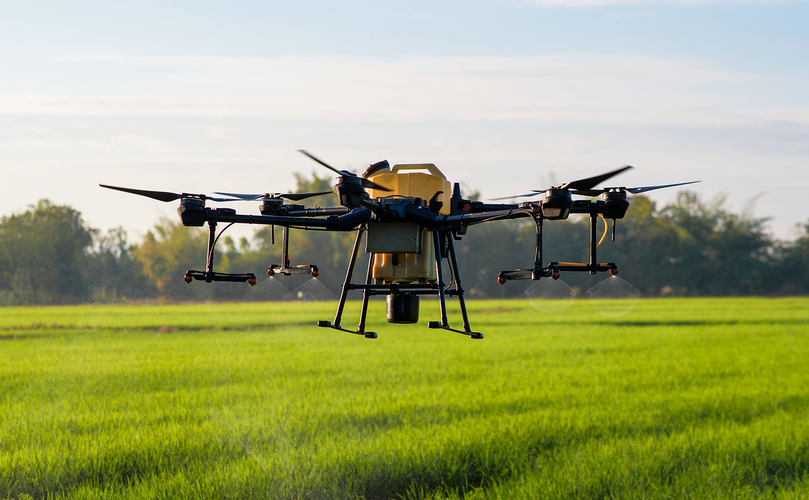
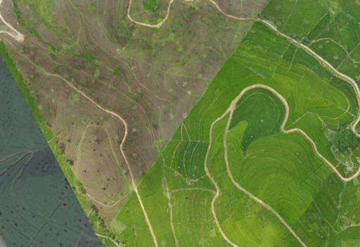
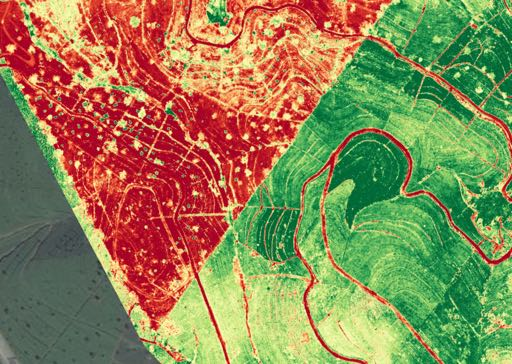
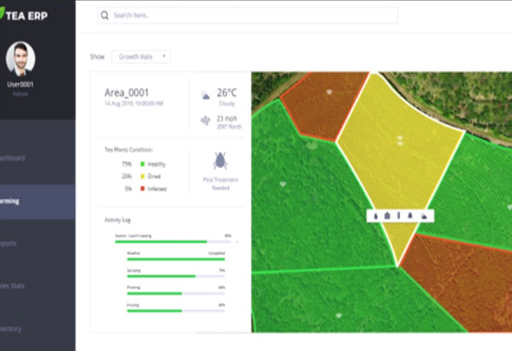
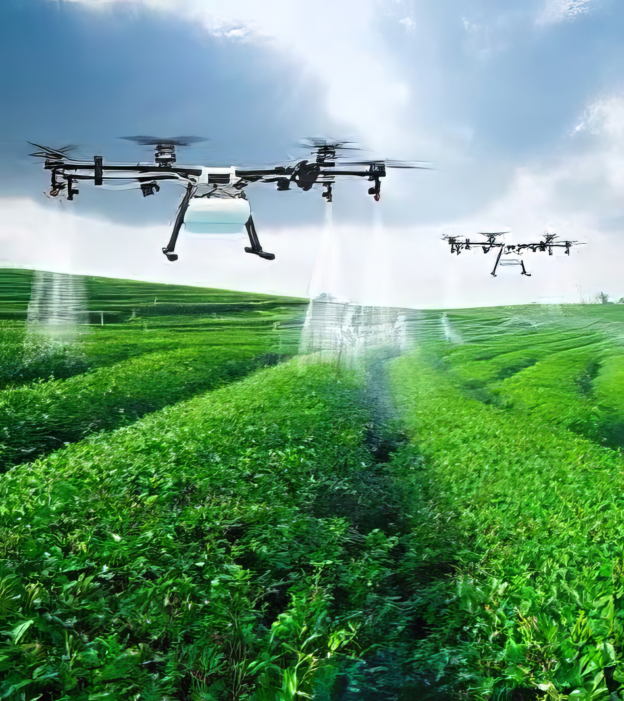

The first company globally to be certified in a country to operate fully autonomous aerial robots for crop spraying.
BRAIIN's Robotics division, Raptor300, is a market-leading agriculture and analytics services company providing end-to-end solutions to improve farming productivity. The platform provides users a dashboard with detailed maps of plantations and actionable insights.
The division has filed two provisional patents with the United States Patent Office that utilise Machine Learning/AI and Robotics for Unmanned Aerial Systems.
Fully autonomous agricultural drones covering 2-3 hectares per hour, carrying 15kg of chemicals.
Efficient spraying up to 15x the speed of humans with up to 30% cost savings on chemicals.
Reporting of efficiency metrics including path flown, plant coverage, and spray utilisation.
Two provisional patents filed with USPTO for ML/AI and Robotics for Unmanned Aerial Systems.

Comprehensive drone-based mapping, scanning, and analytics delivered through a single user-friendly dashboard.

Immediate and comprehensive high-definition aerial imagery providing invaluable analysis across large farming areas.

Effective monitoring of plant health through multi-spectral camera systems including FPV, thermal, and zoom installations.

Single dashboard for actionable insights. Includes 3D terrain mapping, real-time plant health index, water drainage mapping, and hazard identification.
BRAIIN provides customised agriculture drones for crop spraying — fully autonomous agricultural drones covering up to 2-3 hectares per hour, carrying 15kg of chemicals.
Custom installation of multi-spectral camera systems including FPV, thermal, and zoom. Quality control and reporting of efficiency metrics including path flown, plant coverage, and spray utilisation.
